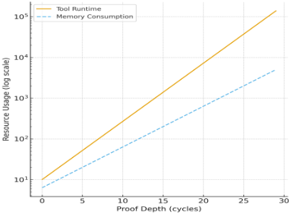
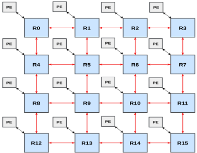
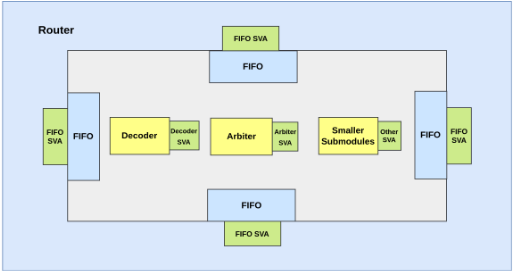
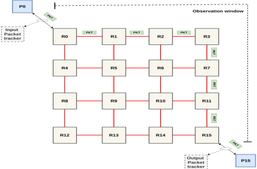
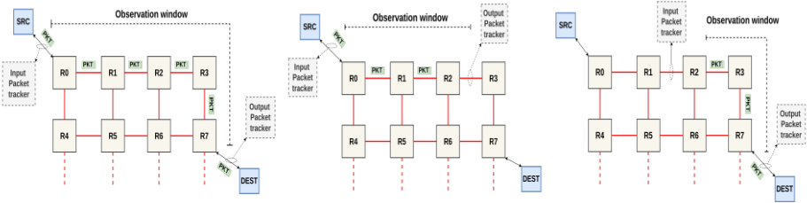
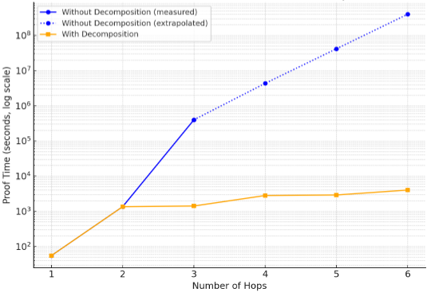
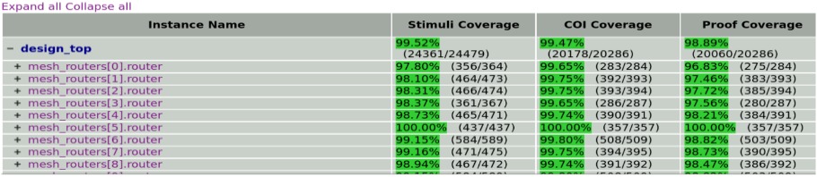

基于路径分解实现 Network-on-Chip 形式验证的可扩展性
论文解决 NoC 形式验证中的状态空间爆炸问题：仿真难以覆盖死锁、活锁、饥饿等分布式并发行为，而直接形式验证在大规模多路由器网络上无法收敛。方法为两阶段混合流程：先用 compositional reasoning 分层证明 FIFO、decoder、arbiter 等子模块并逐级上推到路由器级，再通过参数缩减（16×16 等效降至 8×8/4×4）、按源-目的对 case splitting、packet coloring 与 Packet Tracker 符号跟踪完成端到端验证；核心创新 path decomposition 将长路径切分为两跳的重叠子路径，使验证复杂度从随跳数指数增长降为与段数近似线性。在 BSG NoC 与 FlooNoC 上用 Cadence Jasper 完成实验：六跳路径最高获得 10^5× 收敛加速，4×4 mesh 全部 240 个源-目的对在 50 小时内证完，liveness 属性 72 小时内收敛，4×4 形式覆盖率超 99%、8×8 达 90%，并发现丢包与仲裁两类设计 bug。局限是仅适用于确定性路由，不能直接用于动态路由网络。
仿真验证无法充分覆盖 NoC 分布式、并行、反应式行为，死锁、活锁、饥饿等关键场景的覆盖率与置信度不足；而直接对大规模多路由器网络做形式验证会因状态空间爆炸无法收敛，端到端安全性与活性属性（数据完整性、包序、死锁/活锁/饥饿自由、注入 liveness）在实用运行时间与内存限制内不可证明。论文目标是让复杂互连架构的形式 sign-off 在实际算力下切实可行。
两阶段混合形式验证流程。第一阶段 compositional reasoning：先隔离验证路由器子模块（FIFO、decoder、arbiter），将已证属性作为上层 assume-guarantee，再验证路由器级流控、包转发与接口合规。第二阶段端到端验证：参数缩减（将 16×16 mesh 等效缩减为 8×8 或 4×4，保留角落、边缘、链路能力与架构对称性，使小模型证明可推广到全 mesh）；按源-目的对 case splitting 缩小 COI 并支持多任务并行；packet coloring 按源节点为包着色以无干扰地同时跟踪多包；将 Smart Tracker 扩展为面向 NoC 的 Packet Tracker 做符号包跟踪。核心 path decomposition 将长路径（如 R0→R15）切分为两跳的重叠子路径，以子路径边界状态衔接保证端到端不变式成立，把验证复杂度从随跳数指数增长转为与段数近似线性；并用 Python 实现的路由预测模型按源-目的对自动生成分段。全程不 black-box 路由器子模块，在真实微架构语义上证明安全与活性属性。
采用 path decomposition 后求解收敛最高获得 10^5× 加速（针对六跳通信路径，由三跳证明运行时间外推估算），且在 X-Y 与 Y-X 两种路由配置下结果一致
4×4 mesh 全部 240 个源-目的对在 50 小时内完成证明；覆盖死锁自由、饥饿自由与 forward progress 的 liveness 属性证明在 72 小时内收敛
实验环境为 Cadence Jasper (2025.06)、Intel Core i5 (8th Gen)、16 GB RAM，表明中等算力即可完成穷尽式 NoC 验证
4×4 mesh 的 simple、half-ruche、full-ruche 全部配置获得完整形式验证，形式覆盖率超过 99%；8×8 mesh 达到 90% 形式覆盖率（因存在未完成的 exclusion）
发现并定位两类设计 bug：输入 FIFO ready 与输出 valid 同步不当导致的丢包，以及路由计算与缓冲仲裁重叠导致的错误输出端口选择/误路由
4×4 mesh BSG NoC 在排除死代码与非活动边界通道逻辑后实现高形式覆盖率，达成 coverage closure
相对已有工作（单路由器组件属性检查、assume-guarantee 推理、数据/拓扑抽象、对称性缩减、cut-based 或有界环境分解、flow/credit 级抽象等），已有方法难以同时兼顾可扩展性与端到端 liveness 属性（饥饿自由、包疏散）。本文的 path decomposition 在保留端到端正确性的前提下将长路径切分为可独立验证的两跳重叠子路径，把验证复杂度从指数级降为近似线性；且不 black-box 子模块，在真实实现语义上同时完成安全与活性的完整证明，并以 formal coverage closure 佐证完备性。
相关度级别：high
命中能力域：2.5 形式验证与等效性检查 | 2.4 设计验证方法学
理由：论文直接命中 2.5 的核心技术：formal property checking、安全/活性属性证明、formal coverage closure，并给出一套可复用的形式验证可扩展性方法学（compositional reasoning、case splitting、packet tracker、path decomposition）。团队负责 UCIe 等高速互连 IP 与存储控制器的验证交付，其中的 FIFO 流控、仲裁、credit 流控与跨模块数据通路和 NoC 路由微架构高度同构，论文的数据完整性、包序、死锁/活锁/饥饿自由属性套件可直接映射到团队的协议合规形式化建模与互连验证场景；论文还证明在普通工作站（i5/16GB）+ Jasper 上达成完整证明的工程可行性，对团队建设形式化 sign-off 能力有直接参考价值。其属性套件组织、coverage closure 与基于 counterexample 的 bug 定位流程同时属于 2.4 验证方法学范畴；Python 自动路径分段脚本亦可纳入团队验证自动化实践。
建议动作：深入精读并做内部分享
基于路径分解的片上网络形式化验证扩展方法
Bilal Ahmed [1]、Umar Yaqoob [1]、Bilal Zafar [1]、Misbahud Din [2]
10xEngineers [1]、拉合尔管理科学大学（LUMS）[2]，巴基斯坦拉合尔
摘要- 基于仿真的技术虽然被广泛用于验证复杂系统，但难以应对现代片上网络（Network-on-Chip, NoC）架构的分布式、并行和反应式行为。这限制了检测死锁、活锁和饥饿等关键行为时的覆盖率与置信度。形式化验证虽然能够进行穷尽性证明，但在大型多路由器网络中会因状态空间爆炸而面临收敛障碍。为解决这一问题，我们提出了一种可扩展的NoC形式化验证方法学，能够系统地证明路由微架构的正确性。所提出的混合流程结合了组合推理、报文抽象和路径分解，使NoC能够针对一套全面的属性套件进行易于处理的形式化验证。利用路径分解技术，我们克服了状态空间爆炸的挑战，并在实际的运行时间和内存限制内实现了对所有可能路径的完整证明。我们针对数据完整性、报文排序、无死锁与无活锁、无饥饿以及注入活性等属性对设计进行了验证。该方法学采用一种精简的基于网状（mesh）结构的模型，既能捕捉真实世界的流量模式和故障条件，同时对形式化工具而言仍保持可行。
形式验证（formal verification）已从一种学术概念发展为验证复杂硬件系统的主流工业实践。随着片上系统（SoC）在规模和异构性方面的不断增长，仅依靠基于仿真的验证已不足以确保所有运行场景下的正确性。相比之下，形式化方法能够生成严格的证明，为设计正确性提供高度可信的保障，同时能够及早发现仿真常常遗漏的错误和边界场景。因此，领先的半导体公司如今已将形式验证作为其验证流程中的标准组成部分。
本工作旨在提升片上网络（NoC）架构形式验证的可扩展性，使证明的完备性能够覆盖实际规模的 NoC。尽管仿真在功能测试中仍然具有重要价值，但它无法保证不存在由并发引发的罕见缺陷。形式化方法虽然能够进行穷尽性证明，但在应用于复杂或规模较大的 NoC 架构时，有时难以收敛。本工作旨在通过一种可扩展的验证方法学来弥合这一差距。所提出的方法能够在实际可行的计算范围内高效验证关键 NoC 属性，例如数据完整性、报文排序和前向推进 [1]，从而朝着对复杂互连架构实现可行的形式签核迈出一步。
将形式化验证应用于 NoC 会引入若干实际挑战。首要挑战是状态空间爆炸，因为可达状态的数量会随网络规模和缓冲深度的增加而呈指数级增长。即使是规模适中的 mesh 网络，也可能超出形式化求解器的计算极限，使端到端证明变得难以处理。如图 1 所示，运行时间和内存占用均随证明深度呈指数级上升，凸显了传统形式化方法所面临的可扩展性障碍 [2]。
第二个挑战源于路由器的分布式与响应式行为。每个路由器在自主运行的同时还要与相邻路由器进行协调，由此产生的循环依赖使无死锁或无活锁等全局属性的验证变得复杂。这类验证需要进行跨多跳的时序推理，进一步增加了复杂度。
最后，定义既易于处理又有意义的属性至关重要。验证 NoC 的正确性涉及证明安全性和活性属性，而要在不过度约束模型或不损害覆盖率的前提下证明这些属性，需要精确的属性定义以及对数据通路和控制逻辑的抽象。

我们的验证方法采用多种形式化验证技术的组合，包括组合推理（compositional reasoning）与端到端数据包跟踪，以实现对 NoC 完整且穷尽的验证。该方法的核心是我们的路径分解（path decomposition）框架，该框架在保持端到端正确性的同时，将长通信路径划分为更小的、可独立验证的段。这一技术使数据包跟踪器（packet tracker）能够在整个 NoC 上无缝扩展，有效证明所有属性，并确保对表 1 中所述 NoC 属性的全面验证。
| Property | Detail |
|---|---|
| In-order delivery | Packets from a given source to a destination arrive in the same sequence as injected. |
| Deadlock freedom | The network must never reach a circular dependency where packets cannot advance. |
| Livelock freedom | Packets must not circulate indefinitely without delivery. |
| Starvation freedom | Every packet must progress forward and eventually evacuate the NoC. |
| Liveness of injection | The system as a whole must make forward progress under continuous injection. |
| Evacuation | During backpressure, packets should still eventually drain from the network. |
| Local liveness | Each router should guarantee transmission of buffered packets when capacity is available. |
| Functional correctness | All packets must be routed to their correct destinations without corruption. |
| Property | Detail |
随着片上系统（SoC）的规模不断扩大、集成越来越多的异构处理单元，片上网络（NoC）已成为事实上的互连架构，取代了传统的共享总线和交叉开关。NoC 提供了可扩展的、基于分组交换的通信骨干，能够在可预测的延迟和吞吐量下支持多个节点间的并发传输。图 2 展示了一个采用 Mesh 拓扑的 4x4 NoC。NoC 已成为现代众核与异构 SoC 中标准的片上通信架构，取代了传统的基于总线的互连。它们通过由路由器和链路构成的结构化拓扑，在处理、存储器和外设组件之间提供并行通信。典型的 NoC 架构采用确定性或自适应路由、虚拟通道以及基于信用的流控机制，以在性能、死锁避免和实现复杂度之间取得平衡。在本工作的实验验证中，我们使用了 BaseJump STL（BSG）NoC [3]，这是一个开源且高度可参数化的基于 Mesh 的互连结构。该 NoC 的模块化结构与可配置性使其成为探索可扩展形式化验证的实用平台。
为确保 NoC 的可靠性与正确性，不仅要验证路由器的局部行为，还必须验证支配端到端通信的涌现全局属性。表 1 中列出的关键属性共同刻画了网络的功能健全性与进展保证。对这些属性进行形式化证明可确保对 NoC 的完整且穷尽的验证 [1]，涵盖所有通信路径上的正确性与活性（即保证向前推进）[4]。要在所有流量模式、路由决策和并发交互下验证这些属性是一项艰巨的挑战，尤其是在考虑网络规模与配置多样性时更是如此。

我们的片上网络（NoC）形式化验证方法分为两个互补的阶段：组合式推理与端到端验证。第一阶段通过属性验证和/或模块化抽象来确立路由器组件的局部正确性。第二阶段利用这些已验证的组件来证明网格级属性，确保在整个 NoC 互连结构上的数据包级正确性、疏散性和活性。这两个阶段共同构成了一个连贯且可扩展的验证框架，将路由器级属性与整个网格范围内的数据包疏散保证衔接起来。
组合式推理构成了我们验证方法学的技术基础。路由器由若干子模块组成，例如 FIFO、译码器和仲裁器。图 3 展示了封装在路由器中的各个模块及其对应的测试平台（testbench）。每个模块首先被独立验证，其属性基于设计意图制定。这些属性刻画了基本的控制流与数据流需求，确保缓冲、路由决策和仲裁等操作的正确性。一旦这些证明得以确立，它们便在下一层次被假定为保证，用于验证路由器级属性，包括流量控制、数据包转发和接口合规性 [5]。这种层次化的证明组合显著缩减了验证状态空间，使形式化验证得以收敛。

虽然组合式推理能够确保各个路由器在隔离状态下行为正确，但它并不能自动保证数据包在网络中正确传输，也无法保证整个系统免于死锁或饥饿。为解决这一问题，我们提出了一种端到端验证框架，用于捕获跨越整个 NoC 结构的数据包级属性。该框架结合拓扑约简、用例拆分与符号跟踪来证明数据包完整性，确保在所有可能的路由与仲裁场景下，从任意源节点注入的数据包最终都能被送达其预期的目的节点。
由于路由路径与状态依赖关系的组合爆炸，对于形式化工具而言，验证一个包含数百个路由器的复杂 NoC 网格很快变得难以处理。我们采用一种网格约简策略，将网络缩减为一个规模更小但行为相似的网格，同时保留基本的通信模式。一个大型 16×16 网格可以被约简为功能等效的 8×8 或 4×4 拓扑，同时保留角落节点、边缘节点以及路由器间链路能力。这种约简保留了架构对称性，使得在较小模型上完成的证明能够推广到完整网格。该方法使得在可处理的计算限度内，能够对活性（liveness）、无阻塞推进（non-blocking progress）和无死锁（deadlock freedom）等全局属性进行穷尽式验证。

为进一步提升可处理性，我们采用基于源-目的节点对的用例拆分（case splitting）。每个验证用例隔离一条源-目的路径，同时将网络的其余部分排除在影响锥（cone-of-influence，COI）之外。这种有针对性的分解减小了每个属性的形式化 COI 规模，从而实现更快的收敛以及多个验证运行的并行执行。通过系统地覆盖所有可能的路由用例，该方法在无需冗余状态探索的情况下实现了完全覆盖。
由于 BSG NoC [3] 的报文结构中不包含显式的源节点信息，我们引入了报文着色（packet coloring）技术，即为每个报文根据其源节点分配一个唯一的颜色。这种抽象使得能够同时跟踪多个报文，而各报文的行为之间互不干扰。实践证明，报文着色在验证不同业务流之间的顺序保证、公平性与无干扰性方面发挥了关键作用。总体而言，它为建模 NoC 互连结构中的多路由器并发与资源隔离提供了一种轻量级却功能强大的机制。
[9] 中最初提出的 Smart Tracker 技术提供了一种高效手段，能够在数据沿通信流水线传播的过程中对其进行符号化跟踪。尽管该技术对单通道或点对点通信极为有效，但由于 NoC 具有分布式特性、并发的报文流以及多变的路由路径，将其直接应用于 NoC 颇具挑战性。为克服这些局限，我们将该概念扩展为报文跟踪器（Packet Tracker）抽象，专门针对 NoC 验证进行了独特适配。图 4 展示了将 Packet Tracker 应用于 4x4 mesh 中最长跳数路径的可视化表示。我们对一个在源路由器处注入的符号化报文进行跟踪，观察其向目的路由器传播的过程。这得益于报文着色与情况拆分（case splitting）技术，二者能够在多种路由场景下以符号方式区分各个报文，从而在保持整体网络正确性的同时，使每条通信路径都能被独立验证。通过维护报文标识符、颜色与路由决策之间的符号对应关系，Packet Tracker 使得在多跳 NoC 互连结构上对报文送达、顺序及报文完整性进行可扩展证明成为可能。代码片段 5 展示了在 4x4 mesh 上应用着色与情况拆分的 Packet Tracker 实现，该实现验证了所有可能的 240 条路径。
generate for (i = 0; i < Mesh_size; i = i + 1) begin : src_loop for (j = 0; j < Mesh_size; j = j + 1) begin : dst_loop if (i != j) begin assign hsk_in[i][j] = Valid_in[i][P]; assign hsk_o[i][j] = Valid_out[dest_rtr[i][j]][P] & ready_out[dest_rtr[i][j]][P]; assign dest_rtr[i][j] = watched_pkt[i][j][dest_bits:0]; assign src_rtr[i] = i[src_bits - 1:0]; assign colored_pkt[i][j] = {src_rtr[i], watched_pkt[i][j]}; assign ready_to_sample[i][j] = hsk_in[i][j] & readyin[i][P] & (data_i[i][P][width_lp-1:0] == watched_pkt[i][j]) & arbit_window; assign incr[i][j] = hsk_in[i][j] & !sampled_in[i][j] & readyin[i][P] & (data_i[i][P][dest_bits -1:0] == dest_rtr[i][j]); assign decr[i][j] = hsk_o[i][j] & !sampled_out[i][dest_rtr[i][j]] & (data_o[dest_rtr[i][j]][P][src_bits + width_lp - 1:width_lp] == src_rtr[i]) & (data_o[dest_rtr[i][j]][P][dest_bits - 1:0] == dest_rtr[i][j]); assign must_read[i][j] = (tracking_cnt[i][j] == 1) & sampled_in[i][j] & decr[i][j]; data_integ: assert property (must_read[i][j] |-> (data_o[dest_rtr[i][j]][P] == colored_pkt[i][j ])); end end end endgenerate
我们的方法避免将路由器子模块作为黑盒处理，而是直接在实际硬件上验证端到端属性。这保留了微体系结构层面的精确性，从而能够在真实实现语义下进行穷尽而又贴近实际的安全性与活性证明。
组合推理与分组跟踪器（packet tracker）抽象在验证路由器和小规模网格时效果良好，但难以随网络规模的增大而扩展。每个路由器都会引入额外的缓冲区、仲裁器和控制逻辑，它们以组合方式相互交互，导致验证复杂度随路径长度呈指数级增长。为缓解这一问题，我们提出路径分解（path decomposition），这是一种结构化方法，将较长的路径划分为更小的、可验证的片段，同时保持属性的全局正确性。考虑一个分组从源路由器 R 0 经过中间节点前往目的路由器 R 15 的情况。我们不再将整条路径 R 0 → R 15 作为一个单一的整体模型来验证，而是将其划分为相互重叠的子路径，例如 R 0 → R 2 、R 2 → R 7 和 R 7 → R 15 。每个子路径都成为分组跟踪器单独跟踪的一条路径，同时保持实际路径的语义不变。通常子路径被划分为两跳，这样模型检测器便能够穷尽地探索所有可达状态，并证明诸如路由正确性、缓冲区一致性和前向进展等局部属性。图 6 给出了使用路径分解对一条 4 跳路径进行分割的可视化示例。
形式化地，将每个子路径定义为：
其中 R s i 和 R d i 表示子路径 P i 的源和目的。于是全局路径 P 可表示为有序组合：
P i 的终止状态作为 P i +1 的初始状态。通过证明每个片段都保持分组的路由意图和数据完整性，我们确保它们的组合在整个路径上维持相同的不变量。
因此，在一致的边界假设下，全局正确性属性 G ( P ) 保持有效，当且仅当所有局部属性 G ( P i ) 均成立。该方法将验证复杂度的指数增长转化为与片段数量呈线性关系。若两跳子路径的平均验证时间为 T 2 ，则 k 跳路径的总验证时间可近似为：
这种近线性扩展特性使得能够对规模显著更大的拓扑（最高至 16 × 16 网格）进行穷尽式证明，同时不损失逻辑完备性或行为准确性。

我们对片上网络（NoC）的路由算法进行建模，以便在源节点处准确预测完整的数据包路由。该预测模型采用 Python 实现，能够根据源-目的对自动对端到端通信路径进行分段。每个片段的构造方式为：一个子路径的目的地与下一个子路径的源相互重叠，从而确保整个路由上的连续性与证明完备性。所生成的路径分段与先前给出的数学模型保持一致。在图 6 所示的路径分解框架下，每个片段均被独立验证，从而在整条路径上确立完整的端到端正确性。
除了支持可扩展的端到端数据包完整性之外，该技术在证明所有可能通信路径上的活性（liveness）属性方面也发挥了关键作用。通过将该方法与 Packet Tracker 抽象相结合，我们确保了注入网络中的每个数据包都会被送达其预期目的地，并保证了在所有允许的路由场景下的前向推进。这种集成使我们能够在同一验证框架内形式化地建立安全性与活性两方面的证明，表明所提出的方法能够有效扩展至全网验证而不损害完备性。
值得注意的是，大多数商用 NoC 因其简单性、可预测性和验证效率而采用基于源的路由（source-based routing）。因此，所提出的技术可广泛适用于实际设计，为采用静态确定路由的现代 NoC 提供了一个可扩展且可复用的验证框架。然而，该技术并不直接适用于动态路由网络。
路径分解技术特别适用于采用确定性路由的 NoC，例如基于源的路由或维序路由（DOR）[10]，其中完整的数据包路径在传输之前即已确定。这种可预测性使得能够对路由算法进行形式化建模并进行系统化的路径分段，同时不损失端到端正确性。我们将该方法同时应用于 BSG NoC [3] 和 FLooNoC [8]，利用其确定性路由行为来验证较小的子路径，这些子路径共同保证了全局完整性。
本节介绍了所提出的形式化验证方法在 BSG NoC [3] 架构上的实验验证。我们在多种网格规模下分析收敛性、运行时间和内存利用率，以评估可扩展性。传统形式化技术通常在通信距离超过较短范围后便无法收敛，而由路径分解驱动的本方法成功地将端到端验证扩展至更大的 NoC 配置，并在整个过程中保持了证明的完备性与设计的准确性。

采用路径分解使求解器的收敛性得到了显著改善，对于六跳通信路径实现了高达 10⁵× 的加速，如图 7 所示。该加速比是通过从呈现超指数增长的三跳证明外推基线运行时间来估计的。这一改进在 X-Y 和 Y-X 两种路由配置下均保持一致，证明了路径分解框架的鲁棒性。通过将复杂路径分割为可验证的子路径，我们在 50 小时内成功证明了 4×4 网格中全部 240 种可能的源-目的对，而涵盖无死锁、无饥饿和前向推进的活性属性证明也在 72 小时内收敛。实验在配备 16 GB RAM 的 Intel Core i5（第 8 代）处理器上使用 Cadence Jasper (2025.06) 完成，表明即使凭借有限的计算资源也能实现穷举式的 NoC 验证。除成功实现证明收敛之外，该框架还在所有受评估的 NoC 配置上实现了形式化覆盖率收敛。
我们对包括 simple、half-ruche 和 fullruche 拓扑在内的所有 4×4 网格配置实现了完整的形式化验证，在实际可行的运行时间内达到了超过 99% 的形式化覆盖率。对于更大的 8×8 网格，尽管设计复杂度和证明深度显著增加（如表 2 所示），我们的框架仍成功验证了大部分安全性和活性属性，达到了 90% 的形式化覆盖率（由于排除项不完整）。这种完备程度使我们能够发现并报告后续各节所讨论的设计缺陷。
| Design | Topology | Routers | Channels | FIFOs | Flops | Gates | RTL Lines | Assertions | Assertions Runtime | Formal Coverage |
|---|---|---|---|---|---|---|---|---|---|---|
| Simple Mesh 4x4 | Mesh | 16 | 80 | 80 | 8585 | 292k | 3558 | 2128 | 72h | 99% |
| Half Ruche 4x4 | Torus | 16 | 112 | 112 | 9283 | 322k | 4385 | 3106 | 65h | 99% |
| Full Ruche 4x4 | Full Torus | 16 | 144 | 144 | 10944 | 360k | 5299 | 4112 | 57h | 99% |
| Simple Mesh 8x8 | Mesh | 64 | 320 | 320 | 302k | 1701k | 3652 | 14336 | 202h | 90% |
| Design | Topology | Routers | Channels | FIFOs | Flops | Gates | RTL Lines | Assertions | Assertions Runtime | Formal Coverage |
在对 BSG NoC [3] 和 FlooNoC [8] 进行形式化验证的过程中，我们在设计的某些配置中发现了一些隐蔽的设计缺陷，每一个缺陷都揭示了微体系结构行为的一个独特侧面，而传统仿真很容易忽略这些行为。这些问题凸显了穷尽式形式化分析在确保所有可达状态正确性方面的强大能力。
其中一类缺陷源于输入 FIFO 就绪（ready）信号与输出 valid 信号之间同步不当而导致的数据包丢失。在某些特定的时序对齐情况下，数据包会被出队，却永远不会被转发到下游路由器，实际上从网络中消失。形式化工具生成了一个精确的反例，展示了导致该状况的 valid/ready 信号跳变的具体序列，从而能够对流控逻辑进行针对性修复。
在路由计算中还发现了另一个问题：某些目的坐标会触发错误的输出端口选择。这种情况发生在路由计算与缓冲区仲裁相互重叠的罕见边界情况中，导致数据包被错误路由。反例在验证过程中暴露了这一问题。
形式覆盖率（formal coverage）是一种与基于仿真的覆盖率非常相似的度量指标，二者目标一致，即衡量形式验证工作的完备性。我们采用所提出的验证策略计算了 BSG NoC 的 4x4 网格的形式覆盖率。在排除死代码以及与非活动边界通道相关的逻辑后，我们在所有活动模块上均获得了较高的形式覆盖率，如图 8 所示。这表明所提出的验证方法学不仅能够确保穷尽性的属性检查，还能够为 NoC 设计实现完全的覆盖率收敛。
<30
< 70
< 100

我们旨在将这一验证方法学扩展至覆盖自适应路由方案和独特的片上网络（NoC）拓扑，探索其对多样化工业实现的适用性。此外，我们计划将该方法进一步扩展至更大规模的网络结构，从而实现对高性能、众核NoC架构的完整形式化验证。